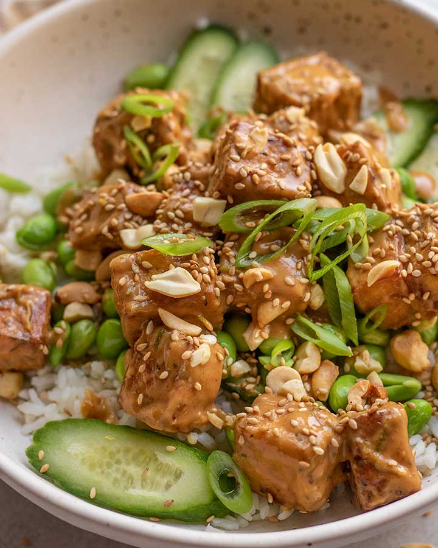

Tofu

This easy baked peanut tofu bowl is a recipe from plant based rd. Every single recipe of hers is amazing!
I have been making her recipes for over a year and every time it hits the spot!
PlantBasedRd Link
Ingredients
Crispy Baked Tofu
- 1 block of extra firm tofu (pressed or frozen if possible)
- 1.5 Tablespoon Cornstarch
- 1.5 Tablespoon Tamari or Soy Sauce
- Thyme, Garlic, season to taste
- 1 Tablespoon high heat oil
Peanut Sauce
- 1 1/2 tbsp tamari
- 1 tbsp maple syrup
- 1/2 tbsp sriracha or chili oil, add more or less to taste
- Juice and zest of 1 lime
- 1 tsp sesame oil, optional
- 1 tsp garlic powder
- 1/2 tsp ground ginger
- 1/2 tsp onion powder
- 3 tbsp water
- Preheat oven to 425F. Cube your pressed tofu and place in an airtight container with the cornstarch, tamari, oil, thyme and garlic. Seal the container and give it a few gentle shakes until the tofu is evenly coated.
- Place the seasoned tofu on a parchment lined baking sheet and bake for 20 minutes. Flip the tofu and then bake for an additional 8 minutes or until the tofu is crisp and golden.
- While the tofu bakes, make the peanut sauce. In a small bowl, add the peanut butter, tamari, syrup, sriracha, lime juice and zest, sesame oil and seasonings. Give it a whisk until it starts to thicken then slowly whisk in the water a tablespoon at a time until it becomes a creamy sauce. Use this time to also thaw your edamame and prepare your rice/quinoa.
- Place the tofu in a bowl or storage container and pour over the peanut sauce. Fold the tofu into the sauce until fully coated.
- Serve the tofu how you wish. I placed mine over a bowl of rice, edamame, and cucumbers. Then top with scallions and sesame seeds and enjoy.